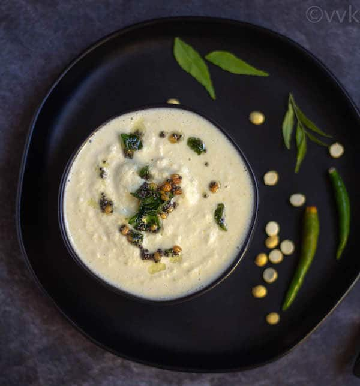

Chutney

Description
Chutney is a simple and tasty coconut based condiment which is served as a side dish. Typically it is served alongside with various dosa recipes for breakfast, but can also be served with idli and upma. It is simple to prepare and can be made within minutes with freshly available coconut.
Ingredients
- Coconut - 1 cup
- Peanuts - 1 tbsp
- Roasted bengal gram dal - 1 tbsp
- Green Chilli - 2
- Tamarind - small piece
- Salt - 1/2 tsp
- Hot water - 1/2 cup
For tempering
- Oil - 2 tsp
- Mustard - 1 tsp
- Urad dal - 1 tsp
- Red chilli, broken - 1
- Curry leaves - a few
Steps
- Firstly, in a blender take 1 cup coconut.
- Also, add 1 tbsp roasted peanuts and 1 tbsp roasted bengal gram dal for hotel style texture.
- Additionally, add 2 green chilli, small piece tamarind and ½ tsp salt.
- Blend to a smooth or coarse paste adding ½ cup water or as required.
- Now prepare the tempering by heating 2 tsp oil in a pan.
- Once the oil turns hot add 1 tsp mustard, 1 tsp urad dal, 1 red chilli and few curry leaves.
- Allow to splutter and pour tempering over chutney.
- Finally, serve hotel style dosa chutney with dosa or idli.
Back to home page